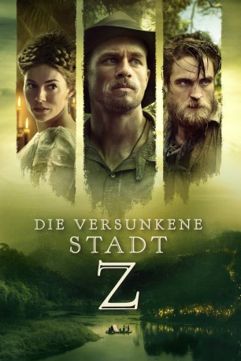
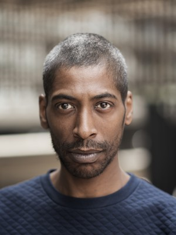
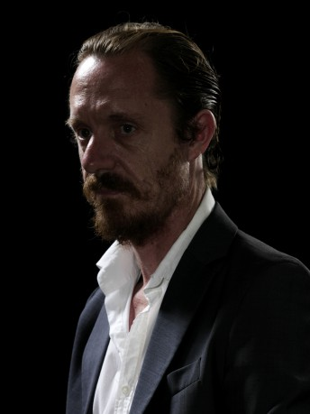

#6698 Die Versunkene Stadt Z
Alternativ: The Lost City of Z
 
 IMDB-Wertung: 6.7 / 10
IMDB-Wertung: 6.7 / 10  Metascore: 0
Metascore: 0 
Percy Fawcett ist Offizier der britischen Armee, wo er jedoch aufgrund seiner Herkunft keine Chancen auf eine große Karriere hat. Da kommt ihm ein Auftrag der Royal Society gerade recht, in deren Namen er in Südamerika Karten des damals noch unbekannten Gebietes erstellen soll. Bei seiner langwierigen und strapaziösen Expedition in den lebensfeindlichen Dschungel am Amazonas stößt er durch Zufall auf Spuren einer offenbar ausgestorbenen Zivilisation, von der noch niemand berichtet hat, und ist bald überzeugt von der Existenz einer verschollenen Stadt, die er „Z“ tauft. Doch als er nach Hause zurückkehrt, glaubt ihm niemand und sein Fund wird als Gehirngespinst verschrien. Gezwungen Beweise für seine Behauptungen zu finden, bricht Fawcett erneut in den Dschungel Brasiliens auf, begleitet von seinem mittlerweile erwachsenen Sohn Brian
Jahr: 2016
Dauer: 140 Minuten
FSK: 12
Land: USA Studio: Amazon StudiosTonspuren: DTS - ,
Untertitel: Deutsch,
Auflösung: 1080p (1920x808) Größe: 6266 MB
Genre: Action, Drama, Abenteuer, Geschichte, Biographie
Regisseur: James Gray
Drehbuch: James Gray
Soundtrack:
Darsteller:
 Charlie Hunnam als Percy Fawcett
Charlie Hunnam als Percy Fawcett Robert Pattinson als Henry Costin
Robert Pattinson als Henry Costin Sienna Miller als Nina Fawcett
Sienna Miller als Nina Fawcett Tom Holland als Jack Fawcett
Tom Holland als Jack Fawcett- Edward Ashley als Arthur Manley
 Angus Macfadyen als James Murray
Angus Macfadyen als James Murray Ian McDiarmid als Sir George Goldie
Ian McDiarmid als Sir George Goldie- Clive Francis als Sir John Scott Keltie
-  Johann Myers als Willis
 Aleksandar Jovanovic als Urquhart
Aleksandar Jovanovic als Urquhart- Elena Solovey als Madame Kumel
- Bobby Smalldridge als Jack Fawcett, 7 Yr Old
- Tom Mulheron als Jack Fawcett, 3 Yr Old
- Daniel Huttlestone als Brian Fawcett, 15 Yr Old
- Murray Melvin als Lord James Bernard
 Harry Melling als William Barclay
Harry Melling als William Barclay Michael Jenn als Brig. Gen. Thorton
Michael Jenn als Brig. Gen. Thorton- Michael Ford-FitzGerald als Hunt Leader
 Franco Nero als Baron De Gondoriz
Franco Nero als Baron De Gondoriz- Frank Clem als Texan Gunman
 David Calder als Secretary Bryce
David Calder als Secretary Bryce- Stacy Shane als American Reporter
- Colin Carnegie als Random Scientist 2
- Richard Croxford als Officer Thomas Busby
 Nicholas Agnew als John Coundley
Nicholas Agnew als John Coundley- Ruairí Heading als Other Soldier 1
- Adam Bellamy als Cecil Gosling , uncredited
- Richard Buick als Army Officer , uncredited
- Brian Matthews Murphy als Archduke Franz Ferdinand , uncredited
 Mark Quigley als British Soldier , uncredited
Mark Quigley als British Soldier , uncredited- John Sackville als Simon Beauclerk , uncredited
- Pedro Coello als Tadjui
-  Matthew Sunderland als Dan
- Nathaniel Bates Fisher als Brian Fawcett, 7 Yr Old
- Bethan Coomber als Joan Fawcett, 7 Yr Old
- Pat Mooney als Random Scientist 3
- Anthony Boyle als Trench Runner
- Neil Bromley als Reporter 2
- Bill Hurst als Reporter 1
- Louise Parker als Random Woman
- Jose Pereira als Chief Guarayo
- Gustavo Duque als Crew Member
- Fernando Vigui als Diminutive Latino Man
- Robert Fawsitt als Random Man at Port
- Patrick McBrearty als Whipping Officer
- Gary Crossan als Waiter @ Savage Club
- Niall Cusack als Random Scientist
- Nick Sampson als Doctor
- David Coon als Random Scientist 4
- Raquel Arraes als Bolivian Lady , uncredited
Datei: X:\2016(N-Z)\Versunkene Stadt Z, Die (2016, FSK12, 1920x808).mkv seit 07.08.2017
Festplatte: HD 2016(A-Z)
 Es gibt insgesamt 182 Filme in der Gruppe '2016(N-Z)'
Es gibt insgesamt 182 Filme in der Gruppe '2016(N-Z)'